香蕉派 BPI-Leaf-S3的正确吃法之ESP-IDF输出日志
本系列旨在交流 ESP32-S3 硬件开发环境的搭建，通过一些基本的示例来展示怎么用 ESP-IDF (Espressif IoT Development Framework) 来安装、配置环境，并编译、下载固件至 BPI-Leaf-S3 开发板等步骤。如果有什么没提到或者有问题的，欢迎各位留言交流。
原文链接: https://qubot.org/2023/03/27/print-log-in-esp-idf-with-bananapi-bpi-leaf-s3/
作者：Qubot
参考文献：https://www.bilibili.com/video/BV1KG4y1d7Ed/
前言
在Arduino中，关于串口输出，只有Serial.print()这一个函数能够通过串口输出日志/报错等，但是在ESP-IDF中，有好几种输出方式。这篇文章我们来聊一聊ESP32-S3在IDF中输出串口的多种方式
安装前的准备
必备硬件
- BPI-Leaf-S3开发板：购买链接（其他ESP32-S3板子也可以）

USB 数据线 (USB-A 转 Type-C)
电脑（Windows、Linux 或 macOS都可以）
必备软件
安装好的ESP-IDF环境，安装方法可以参考这里
VS Code
设置串口
在Arduino中，设置ESP32-S3的串口输出波特率是通过Serial.begin(9600)这个方法，而串口监视器的波特率是在打开串口监视器之后，点击右下角菜单选择的，如下图所示。
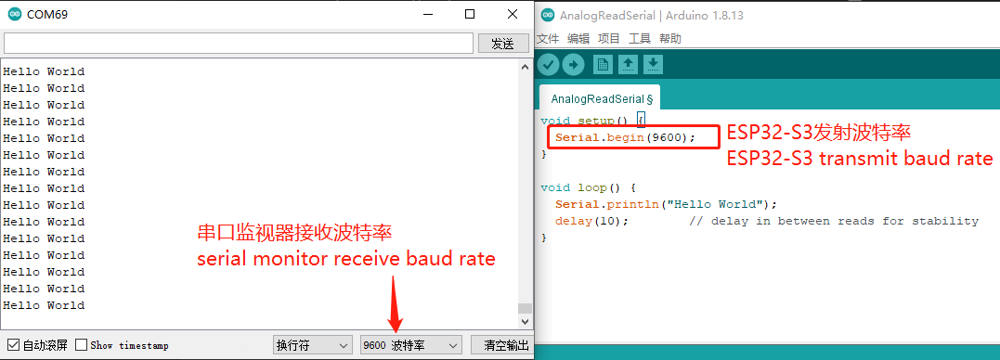
而在ESP-IDF中不是这样的，在ESP-IDF中，需要在Menuconfig中设置。点击左下角第四个按钮，打开menuconfig设置
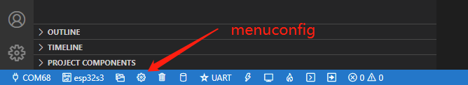
然后按照如图步骤：①在搜索框内输入uart，②点击channel for console output下面的下拉菜单，③选择custom UART，④在UART console baud rate这一栏改成你想要的波特率（默认是115200），⑤点击保存并关闭窗口。这样我们就配置完毕了。
（注意我这里写的时候使用的ESP-IDF版本可能和孤独的二进制使用的不太一样，他使用的版本还有monitor选项，即串口监视器的波特率设置。我这里没有monitor选项，可能集成到uart里面了？我测试过修改波特率之后在IDF的monitor中直接能打开，在Arduino IDE的串口监视器中修改成对应的波特率之后也能打开）
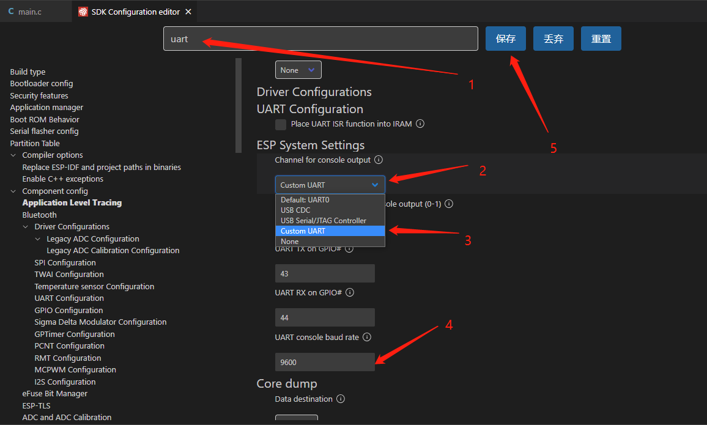
日志功能的使用
要想使用日志功能，我们需要先引入日志的库
#include <esp_log.h>
将鼠标对准“esp_log”，并右键>Go to Definition（或者对准这个按下F12，或者Ctrl+左键），会弹出一个小窗口，这个就是这个库的定义。
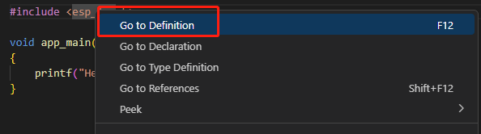
左键点击图中箭头的位置，会在新窗口中打开这个库
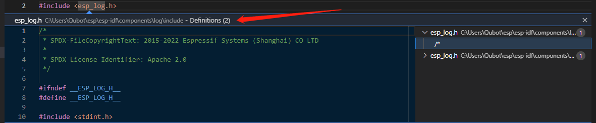
可以看到这里有一些日志类型的定义，我们可以在代码中写下所有的日志，并根据实际情况调整当前输出等级，从而控制日志输出的详细情况，比如调试的时候就切换成debug状态，让他输出debug信息，交付之后调成error，让它只显示报错。
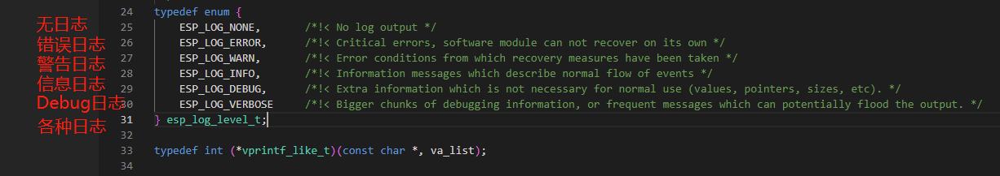
如果你想输出一个信息，就是ESP_LOG后面加信息类型，例如如果你想要错误信息，那就是ESP_LOGE(tag,"你的信息")
接下来我们看一个例子
#include <stdio.h>
#include <esp_log.h>
void app_main(void)
{
printf("Hello World \n");
// E error,
ESP_LOGE("香蕉库存","一个不剩");
// W warning;
ESP_LOGW("香蕉库存","香蕉只剩下2根了");
// I Information;
ESP_LOGI("香蕉库存","香蕉还剩一吨");
// D Debug;
ESP_LOGD("香蕉库存", "香蕉还剩1吨, 已经消耗2吨.");
// V Verbose;
ESP_LOGV("香蕉库存", "香蕉还剩5吨, 已经消耗3吨. 每天消耗一吨, 还能撑5天");
}
点击左下角build,flash and monitor按钮，将这个例子下载到板子上面之后，你会发现串口输出只有E，W，I这三种信息，因为默认情况下IDF设置成的是INFO等级，选中这个等级意味着，information及以上的信息都会输出，这个输出等级需要在menuconfig里面设置一下。
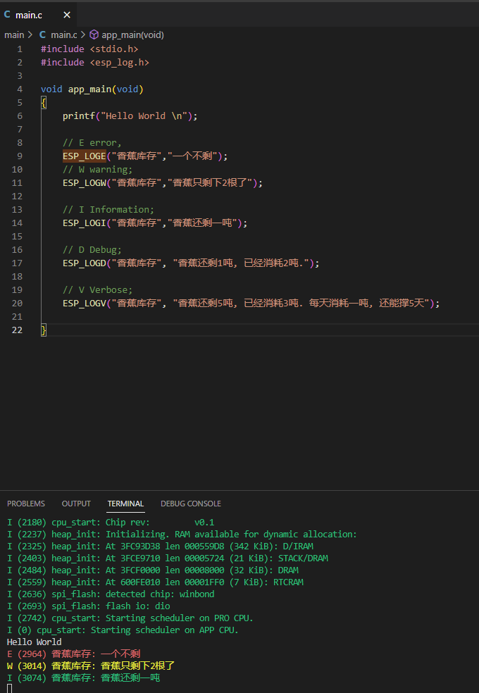
点击左下角menuconfig键，并在搜索框中输入log，如图我们能找到一个Log output的配置。将这个配置改成Verbose，这样Verbose及以上的信息才会都输出出来，最后一定记得要保存并关闭窗口。这样我们就能够看到所有的日志信息了。
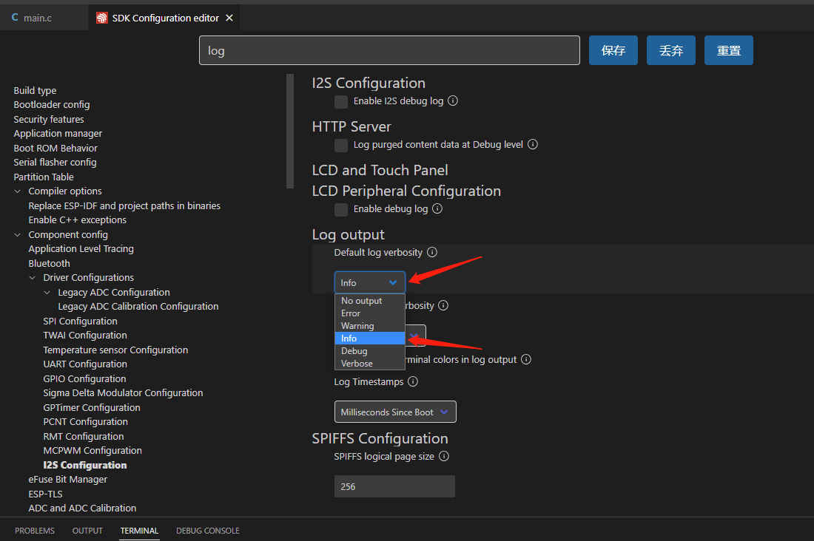
存储完之后，我们再次点击左下角build,flash and monitor按钮，将这个例子下载到板子上面之后，串口的输出就变成完整的所有信息了。
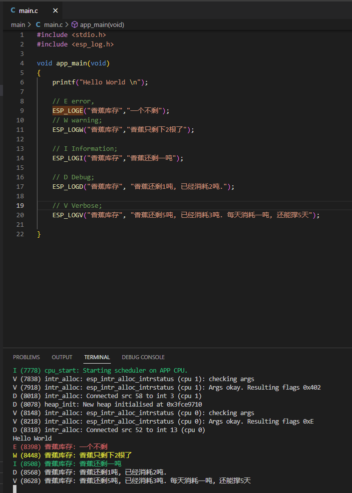
另外我们在esp_log中可以看到这些输出信息的定义
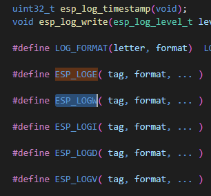
可以看到上面的"香蕉库存"是一个tag，我们可以用字符给它代替掉，以及后面的变量也可以通过%i代替掉，如下所示：
#include <stdio.h>
#include <esp_log.h>
const char* banana_storage ="香蕉库存";
void app_main(void)
{
printf("Hello World \n");
// E error,
ESP_LOGE(banana_storage,"一个不剩");
// W warning;
ESP_LOGW(banana_storage,"香蕉只剩下%i根了",2);
// I Information;
ESP_LOGI(banana_storage,"香蕉还剩%i吨",1);
// D Debug;
ESP_LOGD(banana_storage, "香蕉还剩1吨, 已经消耗2吨.");
// V Verbose;
ESP_LOGV(banana_storage, "香蕉还剩5吨, 已经消耗3吨. 每天消耗一吨, 还能撑5天");
}
日志功能的进阶使用
输出怎么使用我们了解了，接下来就是实际应用了，上面只是说到了在menuconfig中手动改，我们也可以在实际程序中利用某个按键或者某个组合键来调整log输出等级。
在代码中，我们可以通过esp_log_level_set()这个函数来改变输出等级，Ctrl+左键可以看到它的定义和使用方法，前面是tag，后面是log的等级。
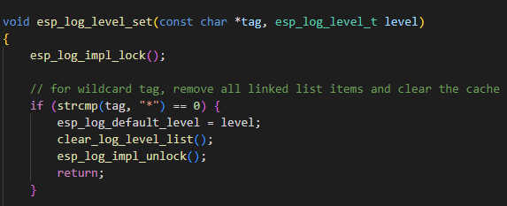
至于等级有哪些？我们可以再次Ctrl+左键，可以看到就是我们刚才看到的这几个等级，这样，我们通过esp_log_level_set(banana_storage,ESP_LOG_VERBOSE)就能将输出等级设置为Verbose状态了。
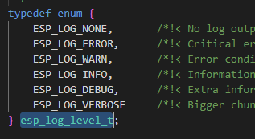
然后我们回到menuconfig中的log设置这里，可以看到这里有两个选项，一个是Default log verbosity，即默认输出等级，另一个是Maximum log verbosity，即最高输出等级。如图设置之后就是，默认输出等级为info，而最高可以调整到Verbose。保存之后退出
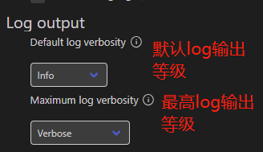
然后在代码中加入一个bool变量（这里有些奇怪，可能库的版本不一样，我在Mac上面的IDF可以直接用bool变量，但是在这里需要引入stdbool.h这个库）
#include <stdbool.h>
bool secretLog = false;
加一个判断
if (secretLog == true) {
esp_log_level_set(banana_storage,ESP_LOG_VERBOSE);
}
最终如下
#include <stdio.h>
#include <esp_log.h>
#include <stdbool.h>
const char* banana_storage = "香蕉库存";
bool secretLog = false;
void app_main(void)
{
if (secretLog == true) {
esp_log_level_set(banana_storage,ESP_LOG_VERBOSE);
}
printf("Hello World \n");
// E error,
ESP_LOGE(banana_storage,"一个不剩");
// W warning;
ESP_LOGW(banana_storage,"香蕉只剩下%i根了",2);
// I Information;
ESP_LOGI(banana_storage,"香蕉还剩%i吨",1);
// D Debug;
ESP_LOGD(banana_storage, "香蕉还剩1吨, 已经消耗2吨.");
// V Verbose;
ESP_LOGV(banana_storage, "香蕉还剩5吨, 已经消耗3吨. 每天消耗一吨, 还能撑5天");
}
下载到板子上之后会发现，目前串口输出只有E,W,I，如下所示
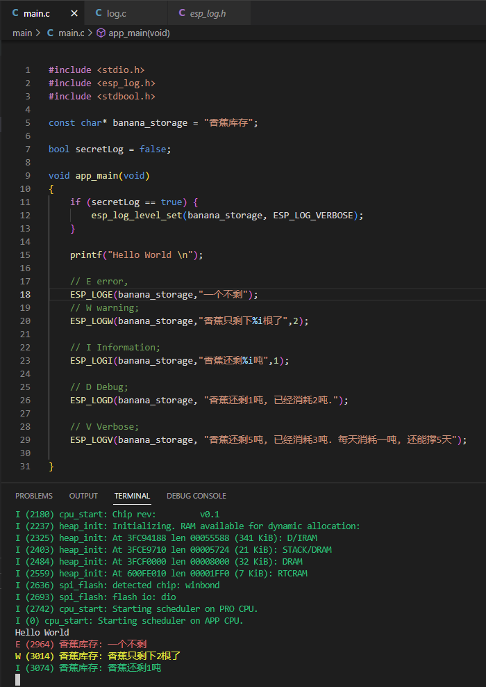
然后我们将
bool secretLog = false;
改为
bool secretLog = true;
会发现,输出中E,W,I,D,V都出现了
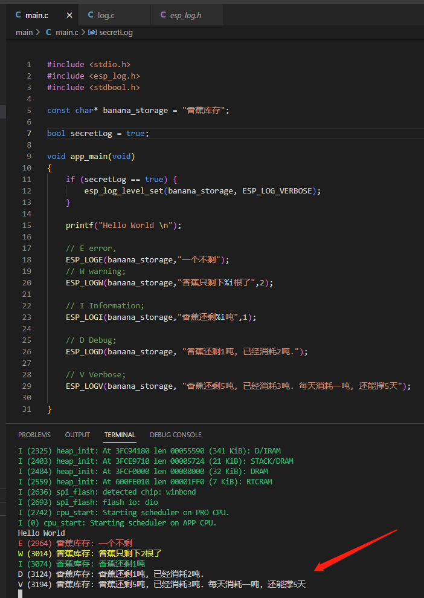
总结
日志在我们调试过程中非常重要，本文讨论了如何将日志输出出来，方便我们调试，以及如何通过一个变量隐藏掉部分等级的日志，让用户看不到，或者重新设置为完整输出。